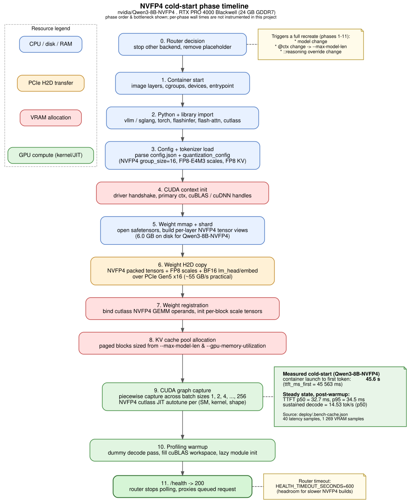
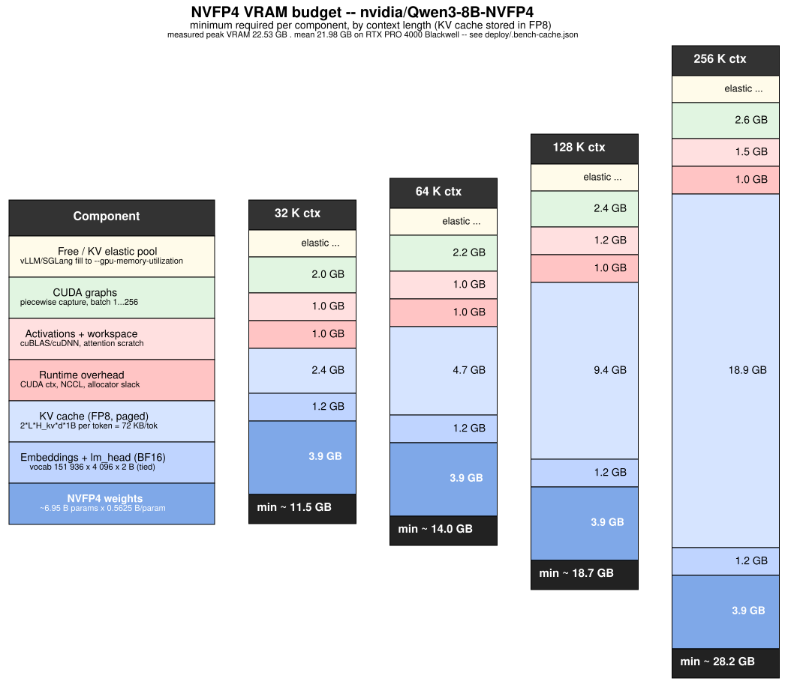

NVFP4 cold start
Phase-by-phase timeline from vllm serve launch to first token,
plus the steady-state VRAM budget broken into the components that actually
consume bytes. Anchored in nvidia/Qwen3-8B-NVFP4 measurements on
an RTX PRO 4000 Blackwell.
nvidia-smi
reports after vLLM has filled the elastic KV pool. That number does
not tell you how much the model strictly needs, why a longer
context can OOM at 24 GB while a shorter one fits, or how cold-start time
relates to steady-state TTFT. The diagrams below answer all three.
Hardware and data sources — read this before quoting numbers
| Number type | Source | Hardware |
|---|---|---|
| Cold-start time, steady TTFT, sustained tok/s, mean/peak VRAM | deploy/.bench-cache.json, key nvidia/Qwen3-8B-NVFP4@ccd10a893cbc |
RTX PRO 4000 Blackwell, 24 GB GDDR7, PCIe Gen5 x16 |
| Quality scores (GSM8K, HumanEval, tools, leak) | same bench cache row + per-sample logs at /var/cache/devai/bench/inspect-logs/ |
RTX PRO 4000 Blackwell |
| Per-component byte breakdown (§2) | NVFP4 spec + Qwen3-8B config.json |
hardware-independent arithmetic |
| Per-phase wall times (§1) | not instrumented in this project — diagram shows order and bottleneck only | — |
| §3 Blackwell GPU reference table | NVIDIA public datasheets — not measured here | extrapolation |
| §4 32B / 70B scaling rows | analytical from public configs, not run | extrapolation; does not fit a single 24 GB card |
There is no enterprise B100/B200/GB200 anywhere in this project's data path. Treat anything outside the 24 GB row as a paper extrapolation.
1. Phase timeline

nvfp4-coldstart-phases.dot. Phase 9 (CUDA graph capture + cutlass JIT autotune) is the dominant cost.Measured cold-start aggregate
The bench harness measures wall time from vllm serve launch to the first emitted token (ttft_ms_first). For Qwen3-8B-NVFP4:
| Metric | Value | Where |
|---|---|---|
| Cold-start TTFT (container launch → first token) | 45 563 ms ≈ 45.6 s | metrics.ttft_ms_first |
| Steady-state TTFT, p50 | 32.7 ms | metrics.ttft_ms_steady_p50 |
| Steady-state TTFT, p95 | 34.5 ms | metrics.ttft_ms_steady_p95 |
| Sustained decode throughput, p50 | 14.53 tok/s | metrics.tps_sustained_p50 |
| Latency samples used | 40 | metrics.n_latency_samples |
The cold-start figure rolls up phases 1–11 from the diagram. There is no per-phase instrumentation in this project, so the diagram shows ordering and which resource each phase touches but does not put a number on individual phases.
What each phase is doing
| # | Phase | Bottleneck |
|---|---|---|
| 0 | Router decision — stop other backend, remove the sleep infinity placeholder | libpod RPC |
| 1 | Container start — image layer mount, cgroups, devices, entrypoint | container runtime |
| 2 | Python + library import — vllm / sglang, torch, flashinfer, flash-attn, cutlass NVFP4 kernels | disk + Python startup |
| 3 | Config + tokenizer load | RAM, single-threaded |
| 4 | CUDA context init — driver handshake, primary context, cuBLAS/cuDNN handles | GPU driver |
| 5 | Weight mmap + shard view construction (6.0 GB on disk) | page cache |
| 6 | Weight H2D copy — packed NVFP4 tensors + FP8 scales + BF16 lm_head/embed | PCIe Gen5 x16 (~55 GB/s practical) |
| 7 | Weight registration — bind cutlass NVFP4 GEMM operands, materialise per-block scale tensors | GPU memory ops |
| 8 | KV cache pool allocation — paged blocks sized from --max-model-len and --gpu-memory-utilization | GPU malloc |
| 9 | CUDA graph capture — piecewise capture across batch sizes 1, 2, 4, …, 256; cutlass NVFP4 JIT autotune | GPU compile |
| 10 | Profiling warmup — dummy decode pass, fill cuBLAS workspace, trigger lazy module init | GPU compute |
| 11 | /health → 200 — router stops polling and proxies the queued request | — |
(GPU SM, kernel, shape) triple. vLLM and SGLang
cache the resulting binaries in
~/.cache/{vllm,sglang}/torch_compile/; the first cold start on a
freshly built image pays the full JIT cost. The 45.6 s above already benefits
from a warm torch_compile cache.
This is why HEALTH_TIMEOUT_SECONDS defaults to 600 s.
The measured 45.6 s is well under that ceiling, but a fresh image, a slower
model (ykarout/Qwen3.5-9B-NVFP4 showed startup_seconds=147
on the same card), or a different Blackwell SM target pushes this much higher.
What triggers a full cold start
The router tracks currentModel, currentContext and
currentSpec per backend. Any of these
changing recreates the container and walks phases 1–11 again. A reasoning
override does not — it is a per-request body rewrite:
- Switching model (e.g.
Qwen3-8B-NVFP4→Qwen3-14B-NVFP4). - Changing context cap via the
@<ctx>suffix (e.g.…-NVFP4@32768→…-NVFP4@131072). - Changing reasoning override (
::nothink,::high, etc.).
A request matching the currently loaded model on all three axes skips phases 1–10 and goes straight to inference.
2. VRAM budget at realistic proportions

How each component is sized
NVFP4 weights — ~3.9 GB
NVFP4 stores each weight as:
- 4-bit value in E2M1 layout (1 sign, 2 exponent, 1 mantissa).
- 8-bit FP8 (E4M3) scale shared across each contiguous block of 16 weights (0.5 effective bits per value for the per-block scale).
- 32-bit FP32 per-tensor scale — negligible.
Effective storage: 4.5 bits per parameter ≈ 0.5625 bytes/param.
Qwen3-8B has ~8.2 B total parameters; with lm_head excluded and tied embeddings,
~6.95 B transformer parameters get NVFP4 → ~3.9 GB on device. The on-disk
safetensors total is 6.0 GB; the difference is BF16 embeddings + per-block FP8 scales + safetensors metadata.
Embeddings + lm_head (BF16) — ~1.2 GB
Quantising the embedding table and output projection to NVFP4 hurts output quality enough that
nvidia/*-NVFP4 checkpoints leave them in BF16. Qwen3-8B uses tied embeddings:
- Embedding table: 151 936 × 4 096 × 2 B = 1.24 GB
lm_head: tied with embeddings → no extra cost.
KV cache (FP8, paged) — scales linearly with context
Per token, the KV cache holds K and V activations for every layer:
bytes_per_token = 2 (K + V) × num_layers × num_kv_heads × head_dim × dtype_bytes
Qwen3-8B-NVFP4 declares quantization_config.kv_cache_scheme = {num_bits: 8, type: float} —
KV is stored as FP8 (1 byte per element), halving the per-token cost vs the FP16 KV
older NVFP4 checkpoints used.
For Qwen3-8B (36 layers, 8 KV heads via GQA, head_dim 128, FP8):
bytes_per_token = 2 × 36 × 8 × 128 × 1 = 73 728 B = 72 KB / token| Context | KV bytes |
|---|---|
| 32 K | 2.36 GB |
| 64 K | 4.72 GB |
| 128 K | 9.44 GB |
| 256 K | 18.87 GB |
This is the dominant scaling cost. Doubling the context doubles the KV cache; everything else is roughly constant.
CUDA graphs — ~2.0–2.6 GB
vLLM piecewise-captures graphs for each decode batch size in
{1, 2, 4, 8, 16, 32, 64, 128, 256} by default. Each graph holds fused kernels,
I/O handles, and intermediate tensors for that shape. NVFP4 GEMMs add their cutlass workspace.
Disable with --enforce-eager to reclaim ~2 GB at the cost of 10–25% decode throughput.
Activations + workspace — ~1.0–1.5 GB
cuBLAS/cuDNN scratch space, attention output buffers, paged-attention metadata tables, prefix-cache index tables. Grows mildly with batch size and context.
Runtime overhead — ~1.0 GB
CUDA primary context (300–600 MB), NCCL communicator (small on a single GPU), PyTorch caching allocator slack, misc small allocations from the runtime.
Free / KV elastic pool — fills the rest
This is the one cell that is not a fixed footprint. vLLM and SGLang grow
the paged-KV pool until total VRAM hits --gpu-memory-utilization (router default ≈ 0.94).
On the reference 24 GB card with strict-minimum ~11.5 GB at 32 K context, the runtime adds ~10.5 GB
of extra paged blocks → bench harness recorded peak_vram_gb=22.53 across 1 269 samples.
Measured bench results — Qwen3-8B-NVFP4
Resource & latency
| Metric | Value | Field |
|---|---|---|
| Peak VRAM observed | 22.53 GB | metrics.peak_vram_gb |
| Mean VRAM (1 269 samples) | 21.98 GB | metrics.mean_vram_gb |
| Cold-start TTFT | 45 563 ms | metrics.ttft_ms_first |
| Steady TTFT, p50 | 32.7 ms | metrics.ttft_ms_steady_p50 |
| Steady TTFT, p95 | 34.5 ms | metrics.ttft_ms_steady_p95 |
| Sustained decode, p50 | 14.53 tok/s | metrics.tps_sustained_p50 |
Quality scores
| Task | Result | n | Field |
|---|---|---|---|
| GSM8K subset | score 0.98 | 100 | tasks.gsm8k_subset_100.score |
| HumanEval subset | pass@1 0.94 | 50 | tasks.humaneval_subset_50."pass@1" |
| Tools-use suite | score 1.0 (single_arg, multi_tool_pick, empty_schema, result_followup all 1.0) | 20 | tasks.tools_use_20 |
| Leak probe (special-token leakage) | 0/40 prompts leaked any of 20 tracked markers, 0 errors | 40 | tasks.leak_probe |
Per-sample logs (inspect_ai .eval zip-of-JSON files) are at /var/cache/devai/bench/inspect-logs/:
from inspect_ai.log import read_eval_log
log = read_eval_log("/var/cache/devai/bench/inspect-logs/<task>.eval")
for s in log.samples:
print(s.id, s.input[:60], "->", s.output.completion[:80],
"score:", list(s.scores.values())[0].value)…or inspect view start --log-dir /var/cache/devai/bench/inspect-logs for the bundled viewer.
3. Blackwell GPU reference (paper extrapolation)
| Part | VRAM | Memory | Class | Used here? |
|---|---|---|---|---|
| RTX PRO 4000 Blackwell | 24 GB | GDDR7 | Workstation | yes — all bench rows |
| RTX 5090 (GB202) | 32 GB | GDDR7 | Consumer | no |
| RTX PRO 6000 Blackwell | 96 GB | GDDR7 | Workstation | no |
| B100 (PCIe / SXM) | 192 GB | HBM3e | Datacenter | no |
| B200 (SXM) | 192 GB | HBM3e | Datacenter | no |
| GB200 (superchip, 2× B200) | 384 GB | HBM3e | Datacenter | no |
Projecting the Qwen3-8B-NVFP4 strict-minimum budget onto each part (NVFP4 weights + BF16 embed + FP8 KV @ ctx + ~4 GB fixed overhead — analytical):
| GPU VRAM | Max context that fits (strict min) | Headroom above strict min |
|---|---|---|
| 24 GB | 128 K (~18.7 GB strict; 256 K crosses 24 GB and probe-OOMed) | ~5 GB at 128 K → modest elastic pool |
| 32 GB | 256 K (~28 GB strict) just fits, marginal headroom | ~4 GB at 256 K |
| 96 GB | any context + comfortable headroom | enough for high batched throughput |
| 192 GB | trivially fits any context | enough to co-host a 70B-class NVFP4 |
4. Scaling to other model sizes (paper extrapolation)
config.json data and the
NVFP4 byte-per-param figure. The 24 GB workstation card this project uses cannot fit either
the 32B or 70B totals. KV columns assume FP8 KV; an FP16-KV checkpoint doubles those bytes.
Only weights and KV cache change with model size; CUDA graphs and runtime overhead stay roughly flat (within ±50%).
| Class | NVFP4 weights | BF16 embed | KV / token (FP8) | KV @ 32 K | KV @ 128 K |
|---|---|---|---|---|---|
| 8B (Qwen3-8B, reference) | ~3.9 GB | ~1.2 GB | 72 KB | 2.4 GB | 9.4 GB |
| 32B (Qwen3-32B class) | ~18.0 GB | ~1.5 GB | 128 KB | 4.0 GB | 16.0 GB |
| 70B (Llama-3.1 class) | ~39.4 GB | ~2.1 GB | 160 KB | 5.0 GB | 20.0 GB |
Strict minimums (weights + embed + KV + ~4 GB fixed overhead):
| Class | 32 K min | 128 K min |
|---|---|---|
| 8B | ~11.5 GB | ~18.7 GB |
| 32B | ~27.5 GB | ~39.5 GB |
| 70B | ~50.5 GB | ~65.5 GB |
5. Operational implications
HEALTH_TIMEOUT_SECONDS=600sits well above the measured cold-start (45.6 s) but leaves headroom for fresh-image cold JIT, larger NVFP4 builds, and SM-cache invalidation on a different Blackwell GPU.- Context-cap changes are not free. Each
@<ctx>change re-walks phases 1–11. The router intentionally exposes the suffix at picker time. - The bench cache is the truth source for VRAM and TTFT.
peak_vram_gbis what the runtime allocated under the elastic policy, not the strict minimum. --enforce-eagerreclaims ~2 GB. Useful as a stop-gap; pay for it in throughput (10–25% slower decode).- Quality scores are bench-cache rollups. If a number looks too good or too bad, open the per-sample log before attributing it to the model.
References
- NVIDIA NVFP4 format reference — block-scaled FP4 (E2M1) with FP8-E4M3 per-block scales, group_size 16. See the Transformer Engine NVFP4 docs and the NVIDIA Qwen3-8B-NVFP4 model card.
- vLLM CUDA graph capture:
vllm.config.CompilationConfig,--enforce-eager,--cuda-graph-sizes. - SGLang RadixAttention + cuda graph capture: SGLang server args
--disable-cuda-graph,--cuda-graph-bs. - Project-internal: router for the request rewrite chain; backends for the lifecycle state machine and probing procedure. Bench tooling at
scripts/bench/with cache atdeploy/.bench-cache.json.